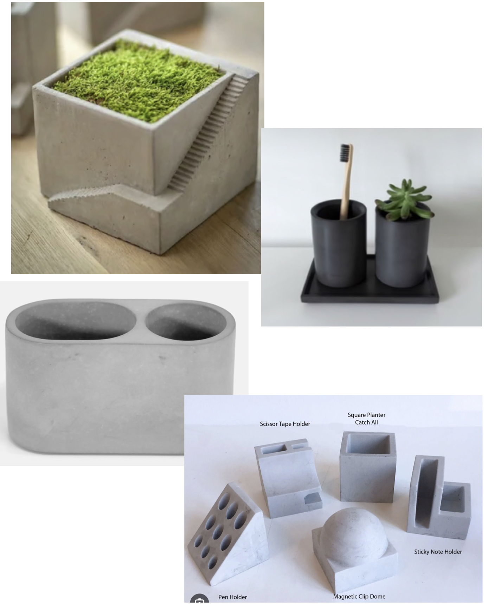
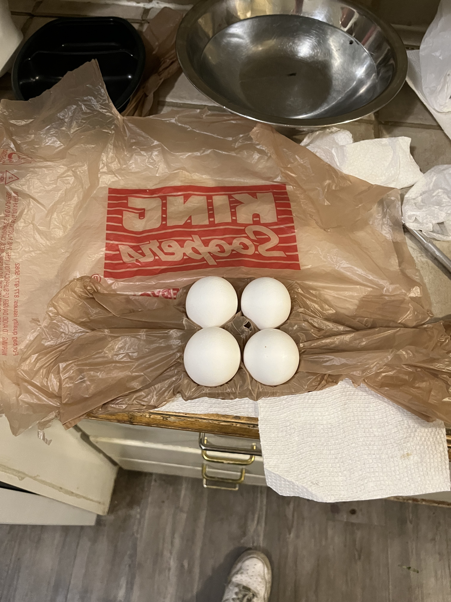
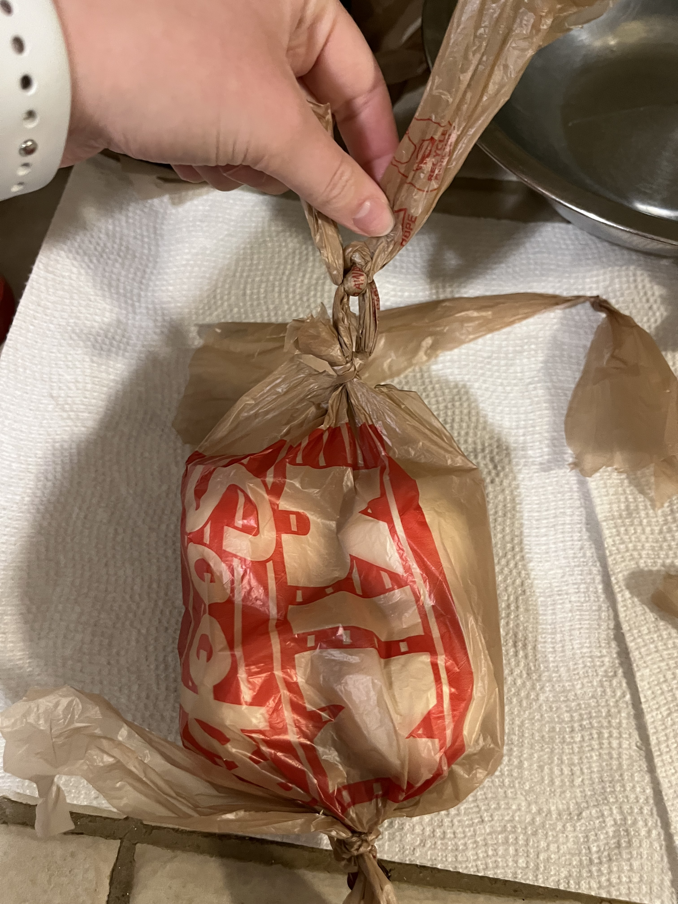
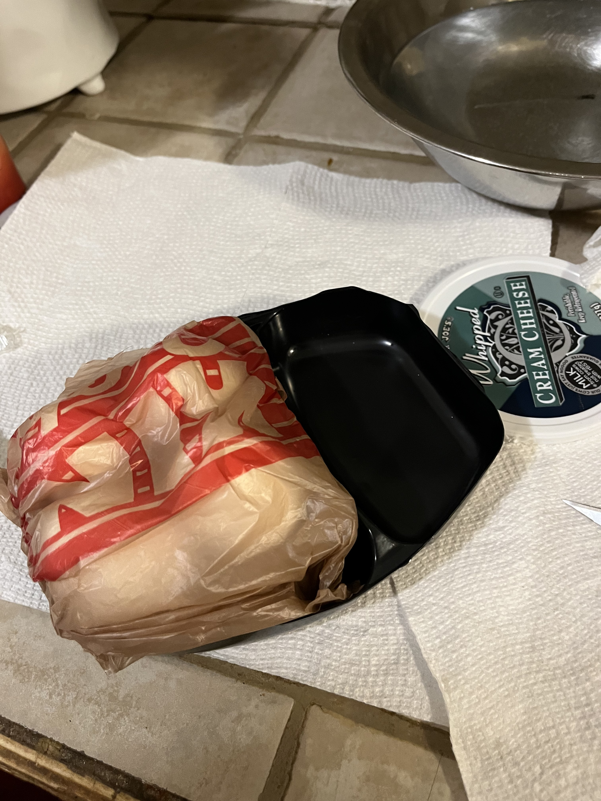
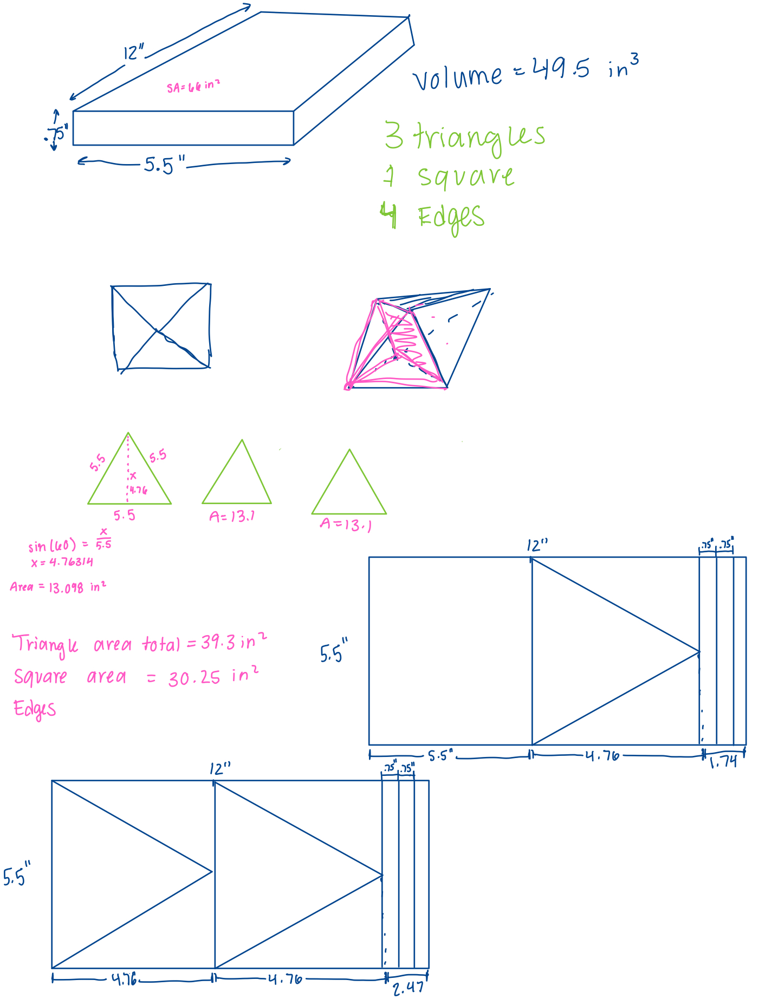
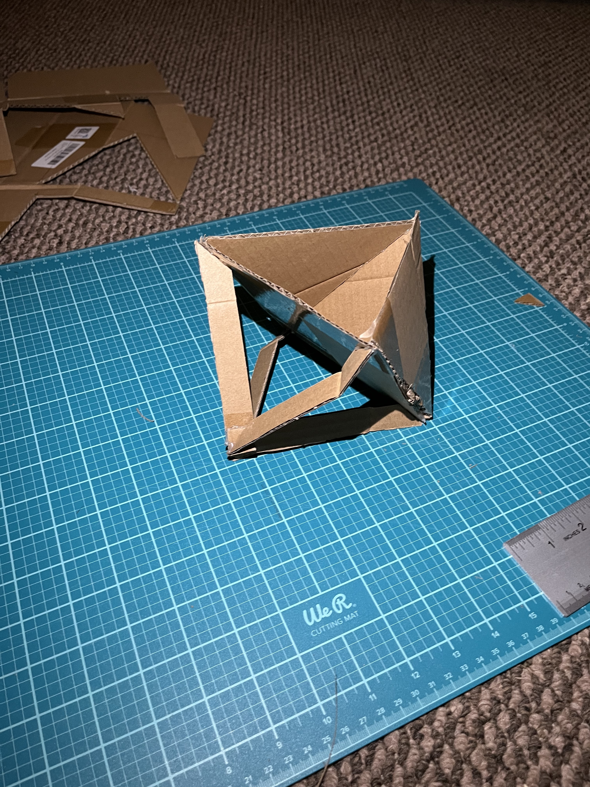

For this assignment I decided to create a penholder combined with a sticky note holder. I always use a lot of sticky notes and different pens on a daily basis but since I don't have any holder for them, they are scattered around my desk leaving it cluttered. I took inspiration from the following images when drafting ideas:
Next I decided to sketch my design. When thinking about the shape of my object I needed to make sure it was going to be something that I could make a negative of when making my mold. For this reason I created a rectangular holder with rectangular features. I then measured out the dimensions of the holder.
To get the mold materials I went to Target. I knew that I needed rectangular objects that could nest inside each other. While wandering around for cheap items I could destroy in the process I came across a lot of empty packing boxes since Target was restocking their shelves. I realized that would be a super cheap way to make a mold so I asked the employees if I could have a recycled box they were unpacking. The employee allowed me to take as many boxes as I needed so I took two which would turn out to be more than enough. I also bought packing tape that I could use to cover the mold and put it together. Since concrete has a lot of water I needed to make sure that my mold was waterproof so the cardboard didn't soak up the water and dissolve, deform or stick to the concrete. To make the mold I created a larger box for the overall shape and then an inner box as well as a thin rectangular box that would be for the sticky notes. Each rectangular piece of cardboard was wrapped in packing tape before being taped together.
Once the mold was done I mixed the concrete. I used the Topping Mix which did not have the large pieces of aggregate. This was important because I had some pretty thin walls on the holder that needed the finer mix for the resolution of the product. I filled the bottom of the holder then put in the tinier box and filled in around the two inside mold pieces. It was at this stage that I realized that I hadn't accounted for the thickness of the cardboard because the inside walls were thinner in some areas than I had anticipated.
Next I left the concrete to start drying. I checked on it once a day for 3 days to make sure there weren't any apparent issues. Each day everything seemed to be good, the moisture was being kept in the mold to cure the concrete but it was slowly getting drier.
When the concrete was finally dry I took off the mold using scissors and a pair of pliers. Luckily the packing tape worked perfectly and the mold was able to easily come off and get out of the insides of the object. I made sure to do this on a brown sheet of paper for clean up purposes since a lot of small concrete bits fell off of the object while I was taking the mold off.
I noticed that a few pieces of tape got stuck in the concrete so I had to use pliers to get them out of the concrete. While I was doing this I realized that the surfaces of the concrete were shiny and had the texture of the tape. When I touched those surfaces it felt very smooth like the packing tape. I got extremely confused if the tape had somehow come off the mold and my concrete was covered in tape. However, when I looked at the mold all of the tape was still on it and when looking at the concrete closer I could tell there wasn't tape because of the holes in the surface that weren't covered.
Many of the edges of the holder were very sharp since the tape and cut out cardboard mold were not precise. The top of my holder was also very bumpy and uneven. First I tried using sandpaper to sand down the big pieces but the concrete was just tearing apart the sandpaper without actually sanding the edge. This can be seen in the photo below, where it was just collecting dust from the sandpaper. So I switched to using a coarse metal file and it worked perfectly without damaging the file. I liked a little bit of texture on the top but I filed down the large bumps or anything sharp. I also filed down the edges so it sat flat on the table and didn't have anything sticking out from the sides. In general I smoothed down the holder.
Next I prepped the piece for painting. I wasn't sure if I wanted to paint it because I liked the glossy texture that it had so I decided to only paint half of it. I found a pastel pink paint that had a chalky finish which I thought would pair nicely with the glossy texture of the rest of the object. I taped the entire top part of the holder so that I would get a straight line across the bottom.
The paint that I chose did not need any primer so I was able to just start painting. I took the concrete along with the paper for under out to the loading dock to spray paint. The directions recommended 2 or more layers spraying every few minutes. After two coats there were still some patches that were more filled in than others so I decided to add another layer. The difference was huge and the third layer created a solid color.
After the paint fully dried I took off the blue painter's tape and was pleased with the final product.
Overall, I am happy with the way the piece turned out. In the future I would use something different to make the mold because the handmade mold created a lot of uneven edges and lumps where the tape was holding it all together. The tape was definitely the largest issue because it was hard to get it into perfect edges. It could be beneficial to use acrylic and laser cut it and use a chemical bonding agent to seal the edges. This would just cost more money because I was able to produce my mold for under $3 whereas that much acrylic would cost closer to $40. I ended up actually liking the tape texture as well because it made it feel more industrial which in this circumstance I like.
I started by going through my recycling looking for allowed plastics. Luckily my roommates also kept a lot of old grocery bags in the pantry that I was able to use as well. I was able to find and wash several items for this project:
Next I experimented with burning the different types of plastic to see if that was an option for bonding materials (Note the big bowl of water at my work station in case a fire got out of hand, I was also next to the sink). It was interesting to see how the behaviors of the plastics changed as I tried to heat different amounts of them at the same time. For instance below is two different times burning the PETE egg carton. The first time I tried a small piece and lit the flame from below to surround the plastic and it caught fire instantly and burned up. The second time I tried a larger amount of the material and hovered the flame over it instead of putting it underneath. This time the material started to warp around the grocery bag that I had put inside of it. I was also trying to see if I could get the two materials to melt together for bonding but the two materials did not melt together. It appeared that they would catch fire before melting together.
After gathering all of the materials and doing some preliminary research I started to think about different ways to build the gondola. I determined that I wanted to make all of the eggs die. The flimsy materials of the HDPE grocery bags inspired me to make that one side of the gondola. This plastic material would not protect the eggs from any damage allowing them to break. I wanted the other side to hold the eggs in one place to make sure they didn't move around while going down the string. I decided to cut out a 2x2 section of the egg carton. Since I knew that these plastics didn't really want to bond well together I wanted to find a way to keep the most plastic in tack as possible. That is why I decided to wrap the cut out egg carton with the grocery bag in a large piece so that all pieces of the grocery bag were connected already.
I used real eggs to push the grocery bag down into the egg carton after wrapping it around once. This would ensure that the eggs would not be pushed out of the gondola. The next step was to wrap the rest of the bag around the eggs to keep them from falling out. I then used leftover bag pieces to tie the edges together and make a loop for the s-hook. This was my first full design.
I soon realized after holding the design by the loop that it might sway and rotate while going down the line. This could mean that the eggs might not hit on the HDPE bag side but could hit on the PETE egg carton side which could potentially pad the eggs. This design also was not very good at getting the eggs in and out of the gondola. So I wanted to create a new way to hold the gondola that I had made at a fixed position on the attachment hook. I realized that this would be best for a hard plastic. The 2x2 plastic holder wrapped in a grocery bag fit perfectly into one side of the black frozen meal container. This rigid structure would hold the eggs in place and keep it from spinning while moving down.
To hold the eggs holder into this black container I cut two holes on the back side and threaded another plastic grocery bag into it. The grocery was cut so that it made a long strip that would be able to wind around the gondola. I tested this out and it worked nicely since on the egg side it fit in between the rows of eggs and held down the brown plastic bag.
I then made a hole at the top of the black container that would be rigid enough to support the weight of the gondola on the s-hook. This new design held together much nicer and it was easy to tie and untie the white plastic bag around the egg holder part which could then be opened to take eggs in and out.

The first step in creating this project was to sketch out my ideas. I wanted to create a polygon with an open side so that it would be able to hold items. I also wanted to get a chance to work with different types of joining so I wanted to join edges and also vertices. This is why I chose the 8 sided polygon with half being solid walls and the other half created by open faces. I did the necessary calculations to figure out how much space I needed and how to arrange the pieces I needed to cut out.
Next I created a mockup out of cardboard. This allowed me to make sure that my measurements were correct and that the pieces would fit on the amount of wood we were given.
I next had to choose which type of wood I wanted to make this out of. I chose the poplar wood because I liked the slight green hue of the wood. The first thing I did once I got the wood was split the wood in half so that I had twice as much area to work with and my pieces could be thinner. To do this I used the table saw to cut slits on both sides and then used the band saw to finish splitting the wood. This left a seam/stripe on some of the wood since the band saw has a much thinner blade than the table saw.
I then used the band saw to cut out the triangles and the edges for the bottom of the object.
To create the miter edges I used the sander. I originally wanted to use the chop saw but the pieces were too small and the angles too large so it was not safe to use it. Instead I just used the belt sander to sand down the edges. However, it is much harder to be precise with that method so some of the edges on the solid-walled side don't really match up perfectly. I think if I were to do this again I would use either the band saw or measure the sides of the wood so I knew how far down to sand.
To create the support edges for the bottom of the piece I used the band saw to cut the angles and then the sander to make them smooth.
Next I started to glue the pieces together. I started by gluing the 3 solid triangle sides together. I attached the open edges to the square middle. After those two pieces dried I attached them together.

Next I sanded down the edges so that they are smooth and in some cases, I sanded them down to fit together. Part of this process also involved using wood putty to fill in some of the major gaps that were between the square middle piece and the wood triangles.
The final step I took was to use oil to finish the project. I used the clear finishing oil liberally with a rag to apply it to all surfaces and edges of the polygon.

When the piece was dry I went over to the documentation station and took some final photos of the wood.
The baldcypress is usually found in wet, swamp-like environments however we have one on our campus here in Boulder, Colorado. From some quick background research it appears that the baldcypress is usually a large tree with firm limbs. If I had to guess the one I sketched, the one on campus, is a little droopy and short because it is not in its natural habitat. I noticed that parts of the tree were filled in and other parts were more sparse.
When taking a closer look at the bark it had a very thin vertical pattern. It was also very peely meaning that the edges of the bark pieces started to peel up. The outside bark was a greyish brown with a redish orange bark under the peeling bark. The branches were more "bare" as far as bark. They had more of the orange wood underneath showing.
The needles of this tree are very different than other conifer trees. The baldcypress needles are very soft and feel like leaves. These extremely short, soft needles made the tree look very fuzzy. The needles grew in long groups together almost as if they are a leaf in a sense. These long needle groups also gave the tree a droopy appearance.
The images below are of the full tree, bark pattern and leaf pattern.
My favorite object is one that I've had since before I can remember. Her name is Kitty Kitty. She is a small, tan, stuffed cat wearing a neutral beige onesie. She is made out of a fuzzy, fur-like cloth with textured cloth clothes. Ever since I was little I remember playing with her outfit as the back of the onesie opens and you can take the tail in and out. She is special to me because she was always the toy I would go to when I was extremely happy or upset. She's traveled the world with me on vacations and is the only toy/stuffed animal I've brought to college. Whenever I need some comfort she is there for me.